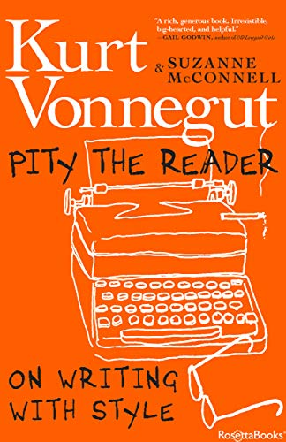

Pity the Reader, by McConnell
Tuesday March 7, 2023
Vonnegut is the headline, and there are a lot of quotes, but it's McConnell's book: elegy, eulogy, paean. I was down on the man a little after I read about his affair in a biography years ago, but this reminded me of his quality.
Vonnegut was an activist author, which I think is good. He was also an entertainer and technician. Too much writing might as well come from ChatGPT: predictable word after word. "Don’t be predictable. End your sentences with something unexpected. Keep me awake." (page 195) A good sentence delights you with pleasant thrills like a fresh ski run. On writing with style: keep the entropy low.

In the following quotes, I make no attempt to clarify whether they come from Vonnegut or McConnell or a character etc.
"fiction is melody, and journalism, new or old, is noise." (page 44)
"Vonnegut earned no degree in anthropology." (page 52)
"Commitment invites Fate to be your Fairy Godmother Collaborator, to close and open just the doors you need." (page 76)
"I once read an interview with John Barth and Kurt Vonnegut and others in which Vonnegut stated that the reason all writers write, of course, is that they want to change the world. Whereupon Barth objected. No, he said. That wasn’t why he wrote. As I recall, Barth said, in effect, that he just liked to horse around with words." (page 84)
"Our awareness is all that is alive and maybe sacred in any of us." (page 93)
"Writing is a generosity, even to yourself." (page 94)
"Vonnegut considered Galápagos his best book, by the way. Because his canary-in-the-coal-mine is on urgent tweet." (page 119)
"Writers who are swoopers, it seems to me, find it wonderful that people are funny or tragic or whatever, worth reporting, without wondering why or how people are alive in the first place. Bashers, while ostensibly making sentence after sentence as efficient as possible, may actually be breaking down seeming doors and fences, cutting their ways through seeming barbed-wire entanglements, under fire and in an atmosphere of mustard gas, in search of answers to these eternal questions: “What in heck should we be doing? What in heck is really going on?”" (page 171)
"The young man did not appear to be listening to his own radio. He may not even have understood English. The newscaster spoke with a barking sort of hilarity, as though life were a comical steeplechase, with unconventional steeds and hazards and vehicles involved. He made me feel that even I was a contestant—in a bathtub drawn by three aardvarks, perhaps. I had as good a chance as anybody to win." (page 176)
"You have to play by the rules of the game of fiction well enough so that you can get across what is in the rag-and-bone shop of your heart. You have to be like a magician or pickpocket, distracting the audience by entertaining, while you are really saying those things you most want to say." (page 189)
"I don’t praise plots as accurate representations of life, but as ways to keep readers reading." (page 202)
"“The thing Kurt seemed to want most in a story,” his student Ronni Sandroff recalls, “was to be surprised. He once challenged us to pause before we turned to the next page in a book and try to guess how the sentence we were in the middle of would end. “You’ll almost always get it right,” he said." (page 212)
"He warned against tiresomeness. He urged originality, freshness." (page 212)
"Nothing in real life ends. “Millicent at last understands.” Nobody ever understands." (page 215)
"it strikes me as gruesome and comical that in our culture we have an expectation that a man can always solve his problems. There is that implication that if you just have a little more energy, a little more fight, the problem can always be solved. This is so untrue that it makes me want to cry—or laugh." (page 270)
"“Since I took up carpentry,” Mark the pediatrician avows, “I measure children much more carefully, sometimes to 1/32 of an inch.”" (page 351)